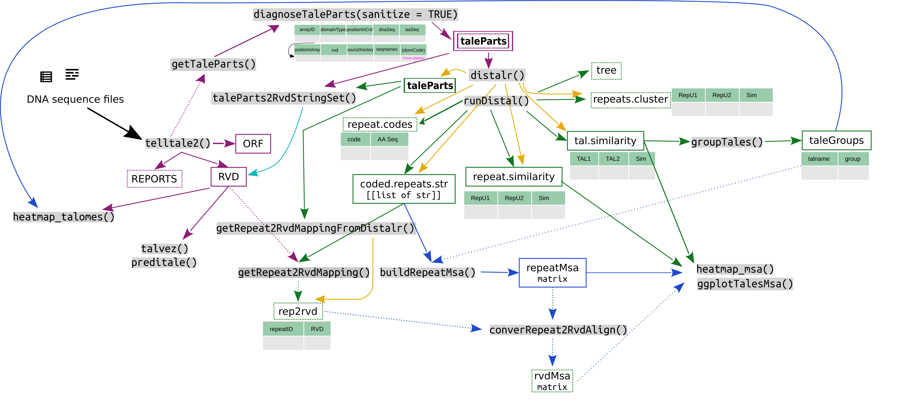

Skip to contents
tantale
0.1.9550
Reference
Articles
1. Mining TALE sequences in genomes with tantale
2. Classifying TALE sequences from genomes with tantale
3. Multiple alignment of TALE sequences with tantale
4. TALE targets predictions with tantale
A comparison between `runDistal` and `distalr` implementations
TALEs domains sequences alignment with MAFFT
An overview of the various objects related to TALEs in tantale
An overview of the various objects related to TALEs in tantale
Source:
vignettes/p3_tantale_objects.Rmd
p3_tantale_objects.Rmd
TODO!!!

workflows network